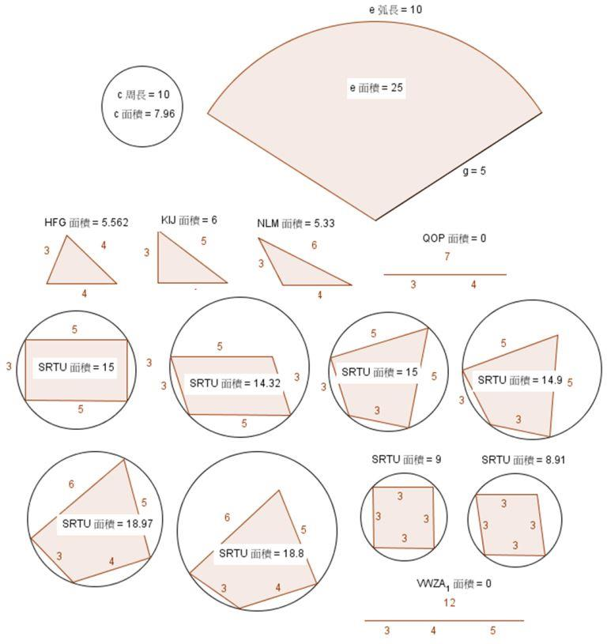

畸形的哭力怕
2014 上學期留社考 廢除
哭力怕國裡有很多哭力怕，有正常的哭力怕，也有畸形的哭力怕，但是所有的哭力怕的臉最多有四個邊。聖誕夜那天哭力怕國王在野外打獵，捕獲了一隻野生的哭力怕，國王覺得它的臉很畸形，想測量一下這個多邊形，並且推估是哪種形狀。
PS.在哭力怕國，圓弧也算一個邊
輸入說明
多筆測資。
每一筆測資有4個整數$A,B,C,D$，"依序"代表各邊的長度$(-10 < A,B,C,D < 10^{7})$
輸出說明
對每一筆測資，輸出多邊形種類以及面積(至小數2位，不合法輸出$-1$)
後來國王發現有些哭力怕的臉的一些邊極小根本是0，請依照下述分類
若有任一邊為負或4個邊皆為零，為不合法多邊形，請輸出$Illegal Polygon$
若有3個邊為零，請將剩餘一邊當作圓周長，輸出$Circle$以及圓面積
若有2個邊為零，請將剩餘較長邊當作圓半徑，較短邊當作扇形所對圓弧長，輸出$Sector$以及扇形面積
若有1個邊為零，請將剩餘的邊當作三角形，可分為4種：
$Acute Triangle$ 銳角三角形
$Right Triangle$ 直角三角形
$Obtuse Triangle$ 鈍角三角形
$Illegal Triangle$ 不合法三角形
其餘的當作四邊形，可分出5種：
$Parallelogram$ 平行四邊形
$Kite$ 箏形
$Rhombus$ 菱形
$Other Quadrilateral$ 其他種類四邊形
$Illegal Quadrilateral$ 不合法四邊形
偷偷告訴你，國王發現四邊形面積最大時必為圓內接四邊形，所以請輸出最大面積
公式
海龍公式：三角形面積$=\sqrt{p(p-a)(p-b)(p-c)}$，其中$a,b,c$為三邊長，$p$為半周長$=\frac{a+b+c}{2}$
婆羅摩笈多公式：四邊形面積$=\sqrt{(p-a)(p-b)(p-c)(p-d)}$，其中$a,b,c,d$為四邊長，$p$為半周長$=\frac{a+b+c+d}{2}$

範例輸入
0 0 0 0
3 4 5 -1
10 0 0 0
0 5 3 0
0 3 4 4
3 0 4 5
3 4 0 6
3 4 7 0
3 5 3 5
3 3 5 5
3 3 3 3
3 4 5 6
3 4 5 12
範例輸出
Illegal Polygon -1
Illegal Polygon -1
Circle 7.96
Sector 7.50
Acute Triangle 5.56
Right Triangle 6.00
Obtuse Triangle 5.33
Illegal Triangle -1
Parallelogram 15.00
Kite 15.00
Rhombus 9.00
Other Quadrilateral 18.97
Illegal Quadrilateral -1
提示/注意事項
菱形屬於平行四邊形也屬於箏形，但是答案要獨立出來
配分方法
| 小測資
<102 | 大測資
<107 |
| Illegal Polygon | 1% |
| Circle | 4% | 5% |
| Sector | 4% | 5% |
| Acute Triangle | 4% | 5% |
| Right Triangle | 4% | 5% |
| Obtuse Triangle | 4% | 5% |
| Illegal Triangle | 4% | 5% |
| Parallelogram | 4% | 5% |
| Kite | 4% | 5% |
| Rhombus | 4% | 5% |
| Other Quadrilateral | 4% | 5% |
| Illegal Quadrilateral | 4% | 5% |